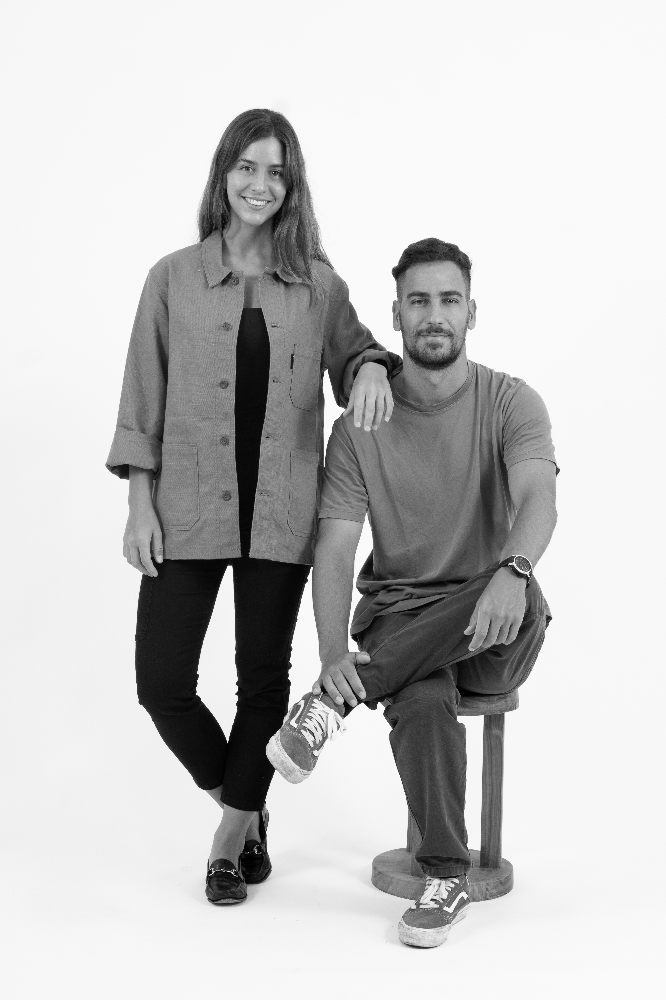
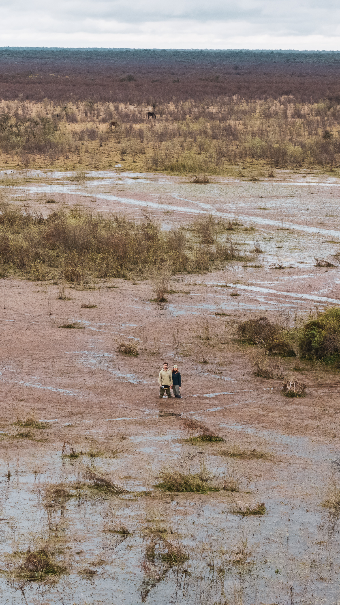

Somos Gerónimo Vigil
y Mia Morrone
Arquitectos argentinos y apasionados por la naturaleza.
Timbó nació de una convicción compartida: que la arquitectura debe profundizar nuestra conexión con la naturaleza y enriquecer la forma en que la habitamos, respondiendo de manera inteligente al clima y al lugar.

Gerónimo, graduado en la Universidad de Belgrano, lidera el área de diseño del estudio. Su experiencia proyectando en paisajes silvestres y prístinos dio forma a un enfoque sensible y profundamente contextual. Cada proyecto nace del entorno, equilibrando materialidad, proporción y simplicidad contemporánea, con una identidad clara y coherente.
Mía completó sus estudios de grado y posgrado en la Universidad Torcuato Di Tella y obtuvo un Master of Science in Sustainable Environmental Design en la Architectural Association de Londres. Lidera el área de desempeño ambiental e investigación, aplicando estrategias rigurosas, medibles y basadas en evidencia para asegurar que cada diseño alcance los más altos estándares ambientales.
Nuestros diseños responden al clima y anticipan los desafíos de un entorno cambiante, combinando territorio, arquitectura y ciencia. Nuestro principal objetivo es el bienestar de las personas: crear espacios que promuevan disfrute y confort.
Jardines, campos, montañas o ciudades: cada paisaje es una oportunidad para diseñar en diálogo con la naturaleza. Abordamos cada desafío, sin importar la escala, el clima o el contexto, con responsabilidad y creatividad.
En Timbó, entendemos la arquitectura como un compromiso a largo plazo con el entorno y las generaciones futuras.
